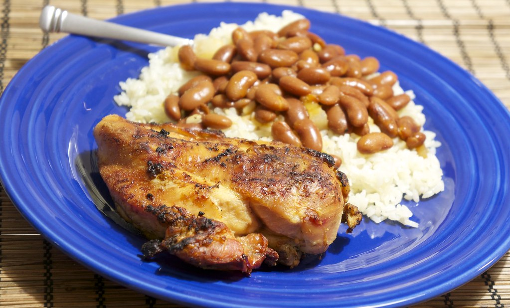

Odin Recipes
The following three recipes make up the perfect Puertorrican plate that will make you chew your fingers!
White Rice
Habichuelas
Fried Chicken
When you are done cooking these recipes, mix them all together and you will obtain this delicious plate. Enjoy!
